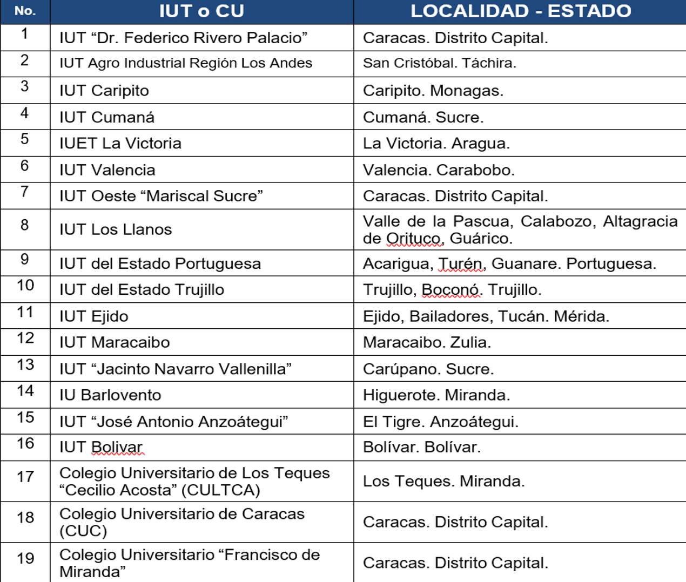
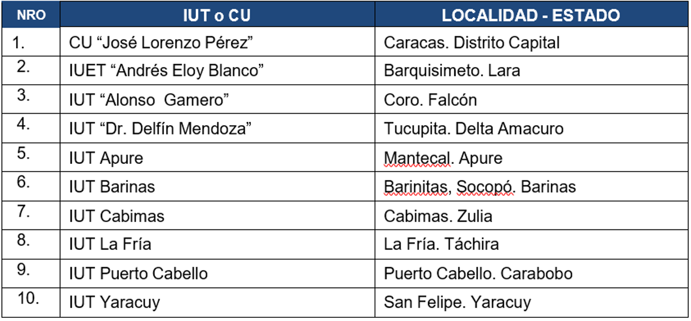

Frente a los retos que suponen las nuevas oportunidades, los IUT (Institutos Universitarios Tecnológicos) y los CU (Colegios Universitarios), en el marco de la Misión Alma Mater y como universidades politécnicas, abrirán sus puertas para mejorar la manera de producir, organizar, difundir y controlar procesos en función del saber y hacer en pro de la comunidad, el desarrollo humano integral sustentable, la soberanía y seguridad nacional y la construcción de una sociedad democrática y participativa. En este sentido, el PNFI será administrado por las actuales instituciones oficiales de educación universitaria (Tabla 1), que dictan la carrera y otorgan el título de Técnico Superior Universitario en Informática o afín.
Fuente: Programas Nacionales de Formación (2008)
Igualmente es de resaltar, que debido a la masificación de la educación universitaria que abarque la geografía nacional, se considera de valor la incorporación en la administración del PNFI, de los Institutos y Colegios Universitarios indicados en la Tabla 2.
Fuente: Misión Alma Mater (2007). Listado de IUT y CU oficiales.